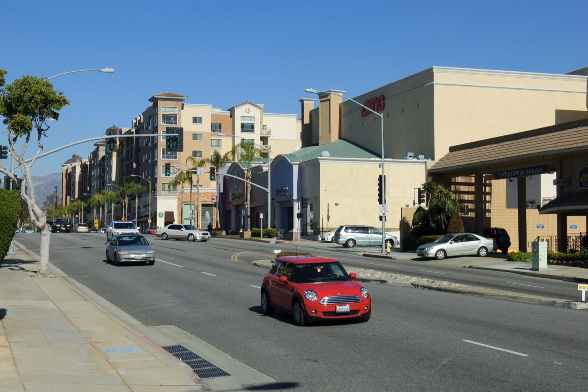
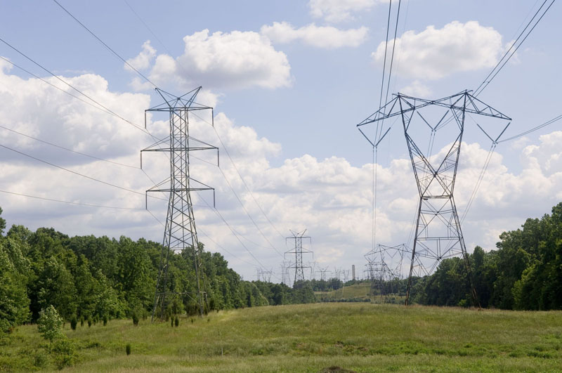

Executive Summary
2026년 6월 2일, 로스앤젤레스 동쪽의 작은 도시 몬터레이파크에서 주민들은 Measure NDC에 86% 찬성, 14% 반대로 손을 들었다. 시 경계 안에서 데이터센터 신설을 영구히 금지하는 안이었다. 데이터센터에 대한 임시 유예 조치는 이미 전국 수십 개 관할구역에 있지만, 주민이 투표용지로 직접 확정한 '영구' 금지는 이 도시가 처음이다.
발단은 옛 쇼핑몰 부지에 들어설 25만 제곱피트, 최대 50MW 규모의 데이터센터 계획이었다. 개발사는 시 전체 전력 수요에서 이 시설이 차지하는 비중이 1% 미만이고, 방음벽과 폐쇄루프 냉각으로 소음과 물 문제를 관리한다고 반박했다. 그런데도 주민 열에 아홉이 반대했다. 이 사례가 흥미로운 것은 숫자 싸움에서 진 쪽이 이겼기 때문이다. 문제는 수치가 아니라 신뢰였다.
핵심은 AI 연산의 편익은 클라우드로 얇게 흩어지는데, 그 물리적 비용, 곧 전기와 물과 소음은 시설이 들어서는 한 동네에 두껍게 청구된다는 데 있다. 몬터레이파크의 86%는 그 청구서를 거부한 첫 표결이었다. 위스콘신·메인·오하이오·네바다에서 비슷한 움직임이 잇따르는 지금, 이 결과가 한 도시의 예외인지 더 큰 흐름의 신호인지는 AI 인프라를 짓는 모두의 문제가 된다.
주요 수치
출처: Ballotpedia(Measure NDC), CalMatters, ABC7, U.S. Data Center Moratorium Tracker
86%
Measure NDC 찬성률
반대 14%, 압도적 통과
50MW
계획 시설 규모
새턴 스트리트 25만 제곱피트
69곳
전국 임시 모라토리엄
영구·주민투표는 이 도시가 최초
3배
시 전력 사용량 증가 추정
반대 측 주장(개발사는 반박)
무엇이, 얼마나 압도적으로 통과됐나
Measure NDC는 몬터레이파크 시 경계 안에서 데이터센터를 새로 짓는 것을 영구히 막는 조례안이다. 2026년 6월 2일 선거에서 찬성 86%, 반대 14%로 통과했다. 개표 초반부터 격차가 벌어졌고, 로스앤젤레스 카운티 선거관리국의 30일 캔버스 기간이 끝난 뒤 7월 초 최종 인증을 거쳐 인증 10일 후 발효된다.
이 표결은 갑자기 나온 것이 아니다. 2026년 3월 시의회가 만장일치로 두 가지를 결정했다. 하나는 기존 데이터센터 모라토리엄을 연장하는 것, 다른 하나는 영구 금지안을 주민투표에 부치는 것이었다. 이 결정 이후 문제의 개발사는 계획을 철회했고, 6월 투표가 남은 절차를 매듭지었다.

1.1'미국 최초'의 정확한 의미
"미국 첫 데이터센터 금지 도시"라는 표현은 자칫 오해를 부른다. 데이터센터 신설을 한시적으로 멈추는 임시 모라토리엄은 2026년 4월 기준 전국 69개 관할구역에 이미 존재한다. 몬터레이파크가 최초인 지점은 두 조건을 동시에 충족했다는 데 있다. 시한이 없는 '영구' 금지라는 점, 그리고 시의회 의결이 아니라 '주민투표'로 확정했다는 점이다.
비교해 보면 이 조합이 왜 드문지 드러난다.
- • 메인주는 주 차원의 임시 유예 법안(LD 307)을 추진했으나 재닛 밀스 주지사가 거부권을 행사해 무산됐다. 밀스 주지사는 거부권 서한에서 다른 주의 대형 데이터센터가 환경과 전기요금에 미친 영향을 감안하면 유예에 일리가 있다고 인정하면서도, 지역의 강한 지지를 받는 특정 프로젝트까지 함께 막힐 수 있다는 우려로 법안을 되돌렸다. 이후 스카버러·브런즈윅·워런 등 개별 타운이 각자 모라토리엄을 시행하는 방식으로 흩어졌다.
- • 오하이오는 25MW 이상 데이터센터를 금지하는 주민발의(주 헌법 개정)를 시도했지만, 필요한 서명 41만여 건 중 약 7만 건만 모아 2026년 투표 안건에 오르지 못했다. 추진 측은 2027년 재도전을 예고했다.
그래서 정확한 프레이밍이 중요하다. 몬터레이파크는 '데이터센터를 규제한 최초의 도시'가 아니라, 영구 금지를 주민 직접투표로 확정한 최초의 도시다. 이 구별은 사소해 보여도 의미가 크다. 시의회 결정은 다음 의회가 뒤집을 수 있지만, 주민투표로 새긴 금지는 되돌리기가 훨씬 어렵다.
25만 제곱피트 뒤의 숫자들
논쟁의 중심에는 구체적인 계획이 있었다. 호주계 자산운용사 HMC StratCap이 몬터레이파크 새턴 스트리트의 옛 쇼핑몰 부지에 약 25만 제곱피트(약 7,000평), 최대 50MW 규모의 데이터센터를 제안했다. 주민과 개발사는 이 시설을 두고 완전히 다른 숫자를 내놓았고, 그 숫자들을 나란히 놓아야 이 표결의 성격이 보인다.

2.1주민이 본 숫자
반대 단체 'No Data Center MPK'의 공동설립자 스티브 쿵은 시설 하나가 몬터레이파크시 전체 전력 사용량을 3배로 늘릴 수 있다고 주장했다. 전기요금 인상과 대기오염이 뒤따른다는 우려였다. 주민들이 든 근거는 전력만이 아니었다.
- • 소음: 인용된 연구에 따르면 데이터센터는 90dB 이상의 소음을 낼 수 있고, 85dB를 넘는 소리에 장시간 노출되면 청력에 해롭다.
- • 디젤 백업 발전기: 정전 시 가동되는 발전기가 미세먼지와 질소산화물을 배출해 천식·폐암 같은 건강 위험을 키운다는 지적이 나왔다(생물다양성센터 메러디스 스티븐슨 인용).
- • 수도요금: 냉각에 쓰이는 물이 지역 수도요금 인상으로 이어진다는 걱정도 제기됐다.
2.2개발사가 내놓은 숫자
StratCap의 반박도 구체적이었다. 요지는 이 시설이 걱정만큼 부담을 주지 않는다는 것이었다.
- • 서던캘리포니아에디슨(SCE) 전체 예상 전력 수요의 1% 미만만 사용하며, 전용 전력 인프라는 개발사가 전액 부담해 주민 요금에 전가하지 않는다.
- • 소음영향평가상 인근 주택 기준 예상 소음은 48.6~52.0dBA로, 기존 배경소음 54~61dBA보다 오히려 낮다. 18피트 방음벽과 차음 인클로저를 설치한다.
- • 폐쇄루프 냉각으로 물 사용을 줄이며, 수도요금은 지역 수도사업자가 시스템 전체 비용을 기준으로 책정하는 것이라 개별 상업시설과 무관하다.
개발사의 수치가 사실이든 아니든, 결과는 86% 반대였다. 여기서 눈여겨볼 것은 기술적으로 안전하다는 주장이 신뢰를 얻지 못했다는 점이다. 주민 입장에서 '1% 미만'이라는 숫자는 검증할 방법이 없는 미래 약속이었고, 반면 소음·발전기·요금은 이미 다른 지역에서 목격한 현실이었다. 데이터 실무자라면 익숙한 구도다. 아무리 정교한 지표라도 그것을 내놓는 쪽의 신뢰가 무너지면 설득력을 잃는다.
지능은 클라우드에, 청구서는 동네에
AI 연산의 결과물은 어디에나 있다. 챗봇의 답변, 추천 알고리즘, 자율주행 판단은 클라우드라는 추상적 공간에서 나오는 것처럼 느껴진다. 그러나 그 연산이 소비하는 전기와 물, 그것이 내는 소음과 열은 반드시 어딘가의 물리적 좌표에 쌓인다. 몬터레이파크가 드러낸 것은 그 좌표가 늘 '누군가의 동네'라는 사실이다.

이것은 우연이 아니라 구조다. 하이퍼스케일러가 데이터센터 부지를 고르는 논리는 전력망에 가깝고, 토지가 상대적으로 싸며, 냉각용 수원이 확보되는 곳으로 수렴한다. 전력은 국지적 자원이라 특정 변전소·송전선에 부하가 몰리고, 토지 용도와 조닝을 정하는 권한은 연방이 아니라 지방자치단체에 있다. 그래서 AI 확장의 편익은 전 세계 사용자에게 얇게 퍼지는 반면, 비용은 시설이 들어서는 한 도시에 두껍게 청구된다.
업계가 내세우는 규모는 이 불일치를 오히려 선명하게 만든다. 캘리포니아 전체로 보면 287개 데이터센터 시설이 2024년 기준 66만5,000개 일자리와 141억 달러의 세수(주·지방 합산)를 만들어 낸다. 데이터센터연합의 주정책 담당 카라 보엔더는 이번 금지가 "이 지역은 사업하기에 닫힌 곳"이라는 신호를 보낸다고 비판했다. 산업 전체의 경제 기여는 크다. 그러나 그 편익이 계산되는 단위(주 전체)와 비용이 청구되는 단위(한 동네)가 다르다는 점이 갈등의 뿌리다.
AI 인프라를 설계하는 쪽에서 이 불일치는 새로운 종류의 리스크다. 연산 수요 곡선이 아무리 가팔라도, 그 수요가 실제로 서려면 전력·수도·조닝 같은 지역 자원의 '동의'를 통과해야 한다. 몬터레이파크는 그 동의가 명시적으로, 그리고 압도적으로 거부될 수 있음을 보여준 첫 사례다.
예외인가, 신호인가
인구 6만5,000명의 도시 하나가 낸 결과를 두고 흐름이라 부르기는 이르다. 그러나 몬터레이파크만 움직인 것은 아니다. 2026년 한 해 캘리포니아·미시간·네바다·위스콘신 등에서 최소 다섯 건의 지역 데이터센터 관련 주민투표가 예정되거나 시행됐다.
- • 위스콘신 포트워싱턴: 대형 개발에 세금감면을 줄 경우 주민투표를 의무화하는 조례가 2:1로 통과했다. 다만 이미 착공한 OpenAI·오라클의 150억 달러 규모 프로젝트에는 소급 적용되지 않는다.
- • 위스콘신 제인즈빌: 4억5,000만 달러 이상 데이터센터 프로젝트에 주민투표를 요구하는 안을 검토 중이다.
- • 네바다 볼더시티: 시유지에 데이터센터를 허용할지 여부를 2026년 가을 주민투표에 부친다.
- • 메인주 개별 타운: 주 차원 유예가 무산된 뒤 스카버러·브런즈윅·워런 등이 자체 모라토리엄으로 움직였다.
물론 반대 방향의 사례도 있다. 몬터레이파크 인근의 시티오브인더스트리는 오히려 데이터센터를 적극 유치하는 쪽이다. 여기서 "금지가 개발을 막는 게 아니라 옆 동네로 밀어낼 뿐"이라는 반론이 나온다. 한 도시가 문을 닫으면 사업자는 규제가 느슨한 이웃 도시로 옮겨 가고, 총량은 그대로라는 지적이다. 이 반론은 무겁게 받아들일 만하다. 개별 도시의 금지가 전국 단위의 전력·환경 부담을 줄이지는 못한다.
다만 밀려간 곳에서도 같은 질문이 되풀이된다는 점이 핵심이다. 엘리자베스 양 몬터레이파크 시장은 주민들이 문을 두드리고 팻말을 세우고 모금과 캠페인에 많은 시간을 쏟았다며 "다른 도시들도 뒤따를 것"이라고 내다봤다. 호세 산체스 시의원은 "몬터레이파크 주민들이 세운 모델이 다른 커뮤니티에도 영감이 되길 바란다"고 말했다. 밀어내기가 가능한 것은 다음 동네가 아직 이 질문을 던지지 않았을 때뿐이다.
동의 없는 확장은 지속 가능한가
몬터레이파크가 남긴 질문은 결국 하나로 모인다. 지역의 동의를 얻지 못한 AI 인프라 확장이 얼마나 오래갈 수 있는가. 연방 입법은 논의가 느리고, 시장의 과잉투자는 스스로 조정되기까지 시간이 걸린다. 그 사이 가장 빠르고 단호하게 답을 낸 것은 인구 6만5,000명 도시의 투표용지였다.
기술적으로 안전하다는 설명이 86% 반대 앞에서 무력했다는 사실은, 앞으로의 확장 계획에 새 변수를 더한다. 전력 조달과 부지 확보만큼이나 '지역 동의'가 성패를 가르는 요소가 됐다. 동의를 확보하지 못한 프로젝트는 착공 전에 멈추거나, 착공 후에도 정치적 리스크를 계속 안고 간다.
Editor's Note
페블러스는 그동안 데이터센터 규제를 연방 유예 논의와 컴퓨트 과잉투자라는 '위에서 본' 관점에서 다뤄 왔다. 몬터레이파크는 '아래에서 본' 관점을 더한다. AI 인프라 리스크를 계산할 때, 이제는 전력 단가나 지연시간뿐 아니라 그 시설이 들어설 동네가 어떤 답을 낼지도 함께 놓아야 한다. 데이터의 물리적 비용이 어디에, 누구에게 청구되는가는 더 이상 부차적인 각주가 아니다.
(주)페블러스 데이터 커뮤니케이션팀
2026년 7월 16일
참고문헌
R.1공식 투표 데이터
- 1.Ballotpedia. (2026). "Monterey Park, California, Measure NDC, Prohibit Data Centers Measure (June 2026)." Ballotpedia.
R.2업계·보도
- 2.CalMatters. (2026). "A California city just banned data centers. More might follow." CalMatters Newsletter.
- 3.ABC7 Los Angeles. (2026). "Monterey Park voters approve Measure NDC banning power-hungry data centers within city limits." ABC7.
- 4.ABC7 Los Angeles. (2025). "Monterey Park neighbors push back on proposed data center, citing environmental, health concerns." ABC7.
- 5.Common Dreams. (2026). "Voters in California City Become First in US to Approve Permanent Ban on Data Centers." Common Dreams.
- 6.Nikkei Asia. (2026). "How an Asian-majority city passed the US' first permanent data center ban." Nikkei Asia.
- 7.MultiState. (2026). "Voters Target Data Centers With Local and Statewide Ballot Measures." MultiState Insider.